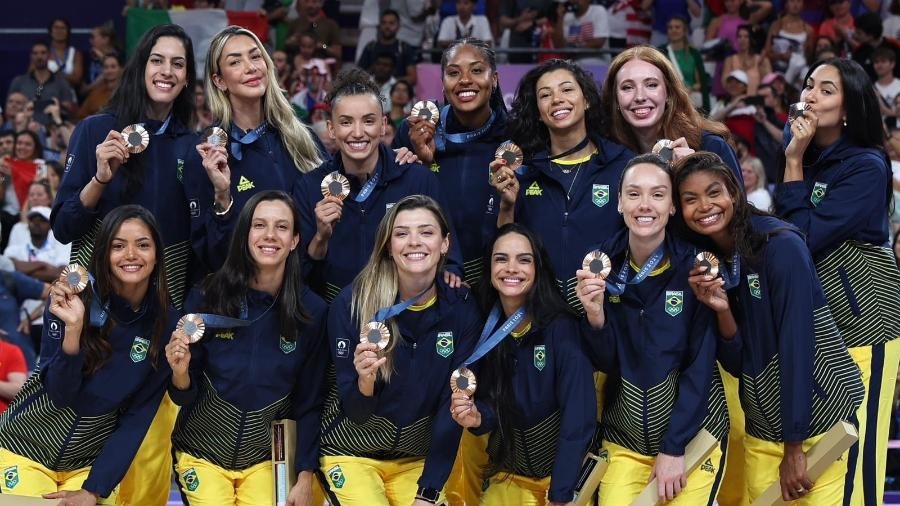
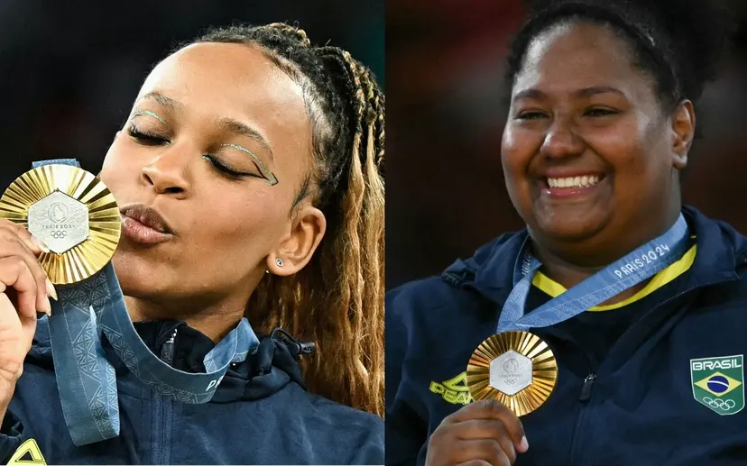
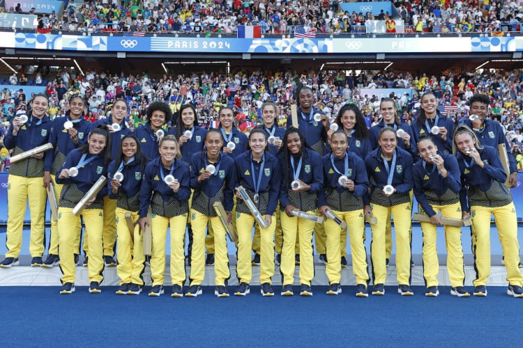

Olimpíadas
As Olimpíadas são o maior evento esportivo do mundo, no qual países dos cinco continentes se reúnem para competir em diversas modalidades. Acontecem a cada quatro anos e são divididos entre as edições de verão e de inverno. Atletas com deficiência disputam as chamadas Paralimpíadas.
A promoção da paz, a integração e a união entre os países compõem o objetivo principal dos Jogos Olímpicos. De acordo com o Estatuto Olímpico, a intenção é garantir o desenvolvimento harmonioso da humanidade por meio da prática esportiva.
As Olimpíadas surgiram na Grécia Antiga, por volta de 776 a. C., na cidade de Olímpia.
Os Jogos Olímpicos da Antiguidade estavam associados a rituais religiosos e prestavam homenagens a deuses gregos, como Zeus.
Após o fim das Olimpíadas antigas, em 393 d.C., os jogos voltariam a ocorrer somente 1503 anos depois.
O francês Barão de Coubertin iniciou as Olimpíadas modernas, no ano de 1896.
"As Paralimpíadas são as competições olímpicas disputadas por pessoas com algum tipo de deficiência.
"Os Jogos Olímpicos são divididos em duas edições, uma de verão e a outra de inverno, que ocorrem em um intervalo de dois anos.
O brasil ficou em 20º na colocação da tabelas das medalhas
Com as mulheres fazendo História
  Top 3 da tabela Olímpica
| País | Medalhas | Total |
|---|---|---|
| Estados Unidos | 40🥇 44🥈 42🥉 | 126 |
| China | 40🥇27🥈 24 | 91 |
| Japão | 20🥇 12🥈 13🥉 | 45 |
| Tabela Olímpica | ||
Os cinco anéis representam cinco continentes (América, África, Ásia, Oceania e Europa) e estão interligados entre si como forma de demonstrar a ideia de união. Os anéis possuem cores diferentes, sendo elas o azul, preto, vermelho, amarelo e verde. A escolha dessas cores se explica porque todo país do planeta tem pelo menos uma dessas cores em sua bandeira.